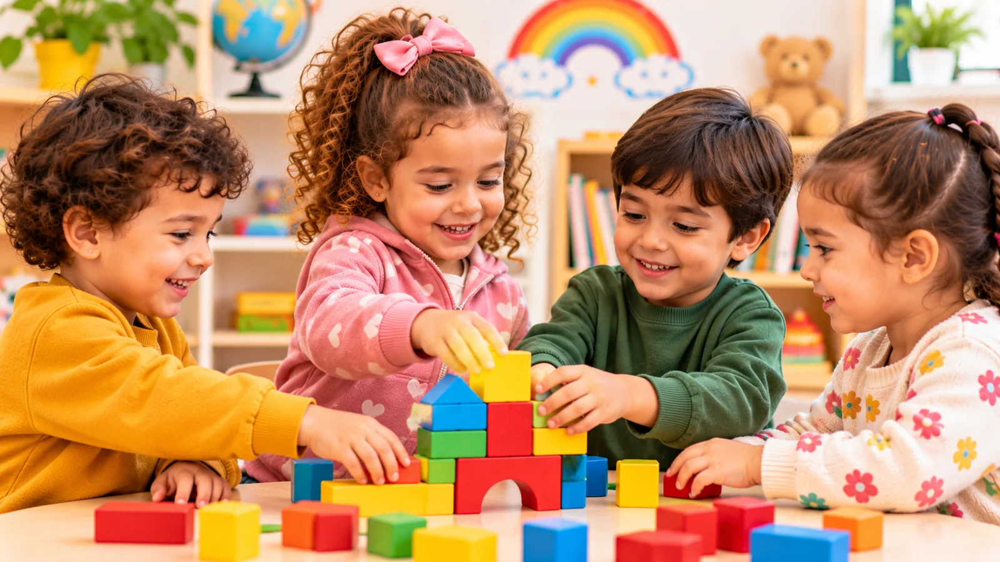

Jouer avec d’autres enfants, participer à une activité de groupe ou attendre son tour : la vie en collectivité offre de nombreuses occasions de découvrir les relations sociales.
Pour un jeune enfant, ces expériences sont progressives. Il apprend à prendre sa place, à exprimer ses envies et à tenir compte de la présence des autres. La socialisation ne se fait pas en un jour : elle se construit à travers les interactions et l’accompagnement des adultes. Si votre enfant s’apprête à vivre ses premiers pas en groupe, découvrez aussi comment préparer l’entrée en collectivité.
Apprendre à être avec les autres
Au contact d’autres enfants, le jeune enfant découvre que chacun peut avoir des envies, des idées et des réactions différentes des siennes.
Les jeux partagés lui donnent l’occasion d’observer, d’imiter, de proposer et parfois de négocier. C’est d’ailleurs souvent par le rôle du jeu dans les relations avec les autres que ces premiers liens se tissent. Ces formes de jeu évoluent avec l’âge ; à titre indicatif :
- Vers 2 ans et demi : beaucoup d’enfants jouent surtout à côté des autres, et parfois avec eux.
- Vers 3 ans : ils remarquent davantage les autres enfants et les rejoignent plus volontiers pour jouer. Les premières affinités apparaissent.
- Vers 3 à 4 ans : ils jouent plus souvent avec un ou plusieurs camarades, enrichissent ensemble leurs idées de jeu et commencent à chercher des solutions lorsqu’ils ne sont pas d’accord.
Chaque enfant avance à son rythme : ces repères décrivent une évolution progressive, pas des étapes à franchir à date fixe.
Qu’apprend-on dans les activités collectives ?
Attendre son tour et respecter des règles simples
Un jeu de ballon ou une activité menée en petit groupe permet de comprendre qu’il existe des tours de rôle et des règles communes. Attendre reste difficile pour un jeune enfant : des phrases simples, comme « Je peux avoir mon tour ? » ou « Après, c’est moi », l’aident à trouver ses repères.
Communiquer et exprimer ses besoins
L’enfant apprend à demander un objet, proposer une idée ou signaler un désaccord. Les adultes peuvent l’aider à trouver les mots et à écouter les autres. Mettre des mots sur ce qu’il ressent permet aussi d’aider l’enfant à exprimer ses besoins et ses émotions.
Coopérer et réaliser quelque chose ensemble
Construire une tour à plusieurs, ranger du matériel ou participer à une activité créative montre que chacun peut contribuer à un projet commun.
Découvrir les différences
La collectivité met l’enfant en contact avec des personnalités, des habitudes et des façons de faire variées. Il découvre progressivement que les autres ne pensent pas et n’agissent pas toujours comme lui.
Il peut aussi y entendre une autre langue que celle de la maison. Certains enfants parlent alors peu pendant un temps, puis mêlent des mots de leurs différentes langues. Ces réactions sont fréquentes lorsqu’on découvre une nouvelle langue, mais chaque enfant a son propre rythme : si un doute persiste sur sa communication, il mérite d’être discuté, quelle que soit la langue parlée à la maison. Les langues de la famille restent une base précieuse, comme l’explique notre article sur le langage et les familles plurilingues.
Prêter, se disputer : des étapes normales
Avoir du mal à prêter un jouet est très fréquent chez les jeunes enfants. Comprendre le point de vue de l’autre demande du temps, et les désaccords font partie de l’apprentissage. Vers 3 ans, beaucoup commencent à partager et à attendre leur tour en petit groupe, même s’ils n’y parviennent pas toujours.
Un geste brusque, comme arracher un jouet, n’est pas toujours une volonté de blesser : c’est parfois une manière maladroite de vouloir participer. Plutôt que de gronder, il est souvent plus utile de montrer comment demander ou proposer un tour de rôle. Les tensions sont aussi plus fréquentes lorsque les enfants ont faim, sont fatigués, ont trop chaud ou trop froid.
Le rôle de l’adulte dans la socialisation
L’adulte organise un cadre sécurisant, rappelle les règles et accompagne les interactions. Il peut aider les enfants à résoudre un désaccord sans intervenir systématiquement à leur place.
Par exemple : « Vous souhaitez tous les deux le même jouet. Comment pouvons-nous faire ? ». Cette médiation permet d’apprendre progressivement à écouter l’autre et à chercher un compromis. Remarquer ce qui s’est bien passé (« Vous avez réussi à vous passer l’arrosoir chacun votre tour ») encourage aussi ces premiers gestes de coopération.
Il est également important de respecter le tempérament de chaque enfant. Certains vont spontanément vers les autres, tandis que d’autres observent plus longtemps avant de participer.
Faut-il s’inquiéter si son enfant préfère jouer seul ?
Pas nécessairement. Le besoin de calme, l’observation ou le jeu individuel peuvent faire partie du développement, et un enfant peut aimer jouer seul par moments tout en appréciant la compagnie des autres. Il est plus pertinent d’observer son évolution générale et sa manière d’entrer progressivement en relation.
Si vous avez des préoccupations persistantes concernant sa communication ou ses interactions, ou s’il perd des compétences qu’il avait acquises, parlez-en à son pédiatre. Un échange précoce permet souvent d’être rassuré ou, si besoin, accompagné.
En conclusion
La vie en collectivité offre un terrain d’expériences pour apprendre à communiquer, coopérer, respecter des règles et prendre en compte les autres.
Ces apprentissages se construisent progressivement, avec le soutien d’adultes attentifs et dans le respect du rythme de chaque enfant.
Apprendre à vivre ensemble commence par de petites expériences partagées, jour après jour.
L’équipe de l’École Maternelle Lila, Avec vous, pas à pas.
Sources et ressources
- CDC – Important Milestones: Your Child By Thirty Months
- CDC – Important Milestones: Your Child By Three Years
- AAP / HealthyChildren.org – Social Development in Preschoolers: Learning How to Share & Cooperate
- AAP / HealthyChildren.org – Young Children Learn a Lot When They Play
- GOV.UK – Development Matters (référentiel britannique de la petite enfance)